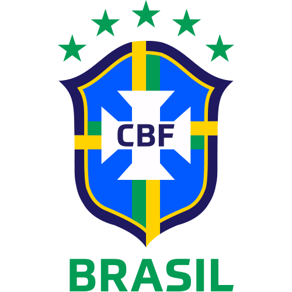

<ion-header [translucent]="true">
  <ion-toolbar>
    <ion-buttons slot="start">
      <ion-menu-button></ion-menu-button>
    </ion-buttons>

    <ion-title>Sobre</ion-title>
  </ion-toolbar>
</ion-header>

<ion-content [fullscreen]="true">
  <ion-header collapse="condense">
    <ion-toolbar>
      <ion-title size="large">sobre</ion-title>
    </ion-toolbar>
  </ion-header>
  <ion-title></ion-title>
  <div class="divImg">
    
  </div>

  <section class="intergrantes">
    <h3>Brasileirão Betano © 2024</h3>
    <p>Marca registrada pela © CBF</p>

    <h2><strong>Integrantes:</strong></h2>
    
    <h3>Gabriel Marcos</h3>
    <h3>Allan Bellusci</h3>
  </section>
</ion-content>
<ion-footer class="ion-no-border">
  <section class="recursos">
    <div>
      <h4><strong>Obrigado por usar nosso APP!</strong></h4>

      <div>
        <div>
          <h5><strong>Framework Utilizado</strong></h5>
          <a
            href="https://ionicframework.com/"
            target="_blank"
            class="txtLink"
            >Ionic</a
          >
        </div>
        <div class="git">
          <h5><strong>Repositório</strong></h5>
          <a
            href="https://github.com/JoaoHenriqueBR/TabelaBR"
            target="_blank"
            class="txtLink"
            >GitHub</a
          >
        </div>
      </div>
    </div>
    <br />
  </section>
  <div class="cbf">© 2024 FATEC Zona Sul</div>
</ion-footer>
